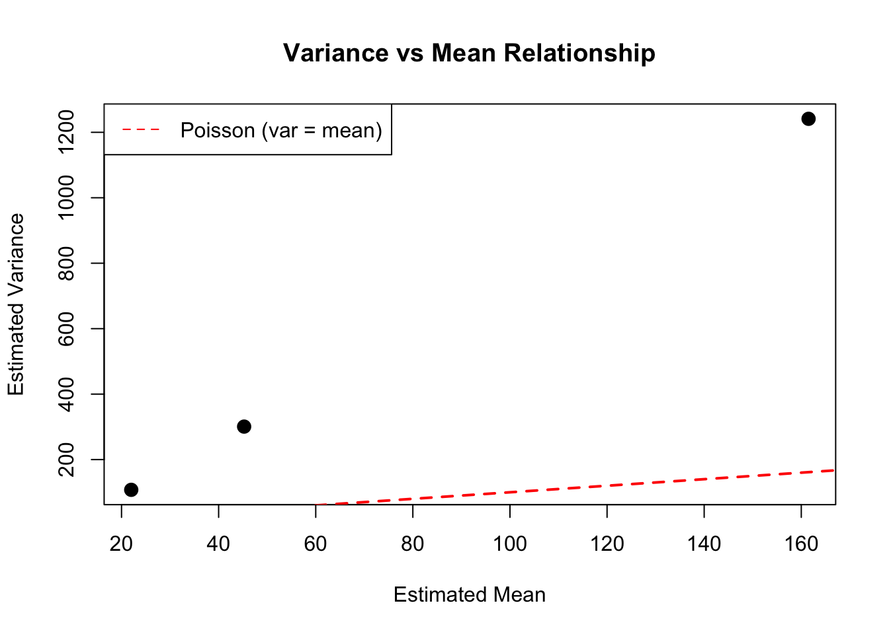

Poisson regression for count data (cell differentiation)
Testing synergistic vs. additive effects of two treatment factors
Model diagnostics using deviance and Pearson statistics
Dispersion estimation for overdispersion assessment
The study investigates whether TNF (Tumor Necrosis Factor) and IFN (Interferon) agents stimulate cell differentiation synergistically or independently.
Package Setup and Data
library(Fahrmeir)library(gee) # For robust quasi-likelihood inference
Warning: package 'gee' was built under R version 4.3.3
library(MASS) # For negative binomial modeling# Load the cells datasetdata(cells)head(cells)
y TNF IFN
Min. : 11.00 Min. : 0.00 Min. : 0
1st Qu.: 28.75 1st Qu.: 0.75 1st Qu.: 3
Median : 60.00 Median : 5.50 Median : 12
Mean : 75.69 Mean : 27.75 Mean : 31
3rd Qu.:108.50 3rd Qu.: 32.50 3rd Qu.: 40
Max. :193.00 Max. :100.00 Max. :100
# Summary statistics by treatment groupwith(cells, by(y, list(TNF, IFN), summary))
: 0
: 0
Min. 1st Qu. Median Mean 3rd Qu. Max.
11 11 11 11 11 11
------------------------------------------------------------
: 1
: 0
Min. 1st Qu. Median Mean 3rd Qu. Max.
22 22 22 22 22 22
------------------------------------------------------------
: 10
: 0
Min. 1st Qu. Median Mean 3rd Qu. Max.
31 31 31 31 31 31
------------------------------------------------------------
: 100
: 0
Min. 1st Qu. Median Mean 3rd Qu. Max.
102 102 102 102 102 102
------------------------------------------------------------
: 0
: 4
Min. 1st Qu. Median Mean 3rd Qu. Max.
18 18 18 18 18 18
------------------------------------------------------------
: 1
: 4
Min. 1st Qu. Median Mean 3rd Qu. Max.
38 38 38 38 38 38
------------------------------------------------------------
: 10
: 4
Min. 1st Qu. Median Mean 3rd Qu. Max.
68 68 68 68 68 68
------------------------------------------------------------
: 100
: 4
Min. 1st Qu. Median Mean 3rd Qu. Max.
171 171 171 171 171 171
------------------------------------------------------------
: 0
: 20
Min. 1st Qu. Median Mean 3rd Qu. Max.
20 20 20 20 20 20
------------------------------------------------------------
: 1
: 20
Min. 1st Qu. Median Mean 3rd Qu. Max.
52 52 52 52 52 52
------------------------------------------------------------
: 10
: 20
Min. 1st Qu. Median Mean 3rd Qu. Max.
69 69 69 69 69 69
------------------------------------------------------------
: 100
: 20
Min. 1st Qu. Median Mean 3rd Qu. Max.
180 180 180 180 180 180
------------------------------------------------------------
: 0
: 100
Min. 1st Qu. Median Mean 3rd Qu. Max.
39 39 39 39 39 39
------------------------------------------------------------
: 1
: 100
Min. 1st Qu. Median Mean 3rd Qu. Max.
69 69 69 69 69 69
------------------------------------------------------------
: 10
: 100
Min. 1st Qu. Median Mean 3rd Qu. Max.
128 128 128 128 128 128
------------------------------------------------------------
: 100
: 100
Min. 1st Qu. Median Mean 3rd Qu. Max.
193 193 193 193 193 193
Poisson GLM: Main Effects + Interaction
We fit a Poisson GLM with the interaction term to test for synergistic effects:
# Fit Poisson GLMglm_poisson <-glm(formula = y ~ TNF * IFN,family = poisson,data = cells)summary(glm_poisson)
Call:
glm(formula = y ~ TNF * IFN, family = poisson, data = cells)
Coefficients:
Estimate Std. Error z value Pr(>|z|)
(Intercept) 3.436e+00 6.377e-02 53.877 < 2e-16 ***
TNF 1.553e-02 8.308e-04 18.689 < 2e-16 ***
IFN 8.946e-03 9.669e-04 9.253 < 2e-16 ***
TNF:IFN -5.670e-05 1.348e-05 -4.205 2.61e-05 ***
---
Signif. codes: 0 '***' 0.001 '**' 0.01 '*' 0.05 '.' 0.1 ' ' 1
(Dispersion parameter for poisson family taken to be 1)
Null deviance: 707.03 on 15 degrees of freedom
Residual deviance: 142.39 on 12 degrees of freedom
AIC: 243.69
Number of Fisher Scoring iterations: 4
Model Interpretation
The terms in the model are: - Intercept: Baseline log count (reference group: no TNF, no IFN) - TNF: Main effect of TNF treatment - IFN: Main effect of IFN treatment - TNF:IFN: Interaction effect (synergy test)
# Exponentiate to get rate ratiosrate_ratios <-data.frame(Coefficient =names(glm_poisson$coefficients),"Rate Ratio"=round(exp(glm_poisson$coefficients), 4))print(rate_ratios)
# Method 2: Using working residuals and weightsdisp_working <-with(glm_quasipoisson, sum(weights * residuals^2) / df.residual)cat("Dispersion from working residuals:", round(disp_working, 4), "\n")
Dispersion from working residuals: 11.7353
cat("\nNote: The dispersion in quasi-Poisson uses working residuals, not Pearson residuals\n")
Note: The dispersion in quasi-Poisson uses working residuals, not Pearson residuals
Example 2.7: Variance vs Mean and GEE
Plot the empirical variance against mean by TNF level:
library(dplyr)
Attaching package: 'dplyr'
The following object is masked from 'package:MASS':
select
The following objects are masked from 'package:stats':
filter, lag
The following objects are masked from 'package:base':
intersect, setdiff, setequal, union
# Compute summary statistics by TNF levelcells_summary <- cells |>group_by(TNF) |>summarize(est_mean =mean(y),# Note: var() computes unbiased estimate; multiply by (n-1)/n for biasedest_var =var(y) *3/4,.groups ='drop' ) |>as.data.frame()print(cells_summary)
# Plot variance against meanplot(cells_summary$est_mean, cells_summary$est_var,xlab ="Estimated Mean",ylab ="Estimated Variance",main ="Variance vs Mean Relationship",pch =16, cex =1.5)# Add reference line for Poisson (variance = mean)x_range <-range(cells_summary$est_mean)abline(0, 1, lty =2, col ="red", lwd =2)legend("topleft", legend ="Poisson (var = mean)", lty =2, col ="red")

GEE with Linear Variance Structure
Use GEE with linear variance function (variance ~ mean):
library(gee)# GEE with linear variance structuregee_linear <-gee(formula = y ~ TNF * IFN,id =1:nrow(cells),family =quasi(variance ="mu", link ="log"),data = cells)